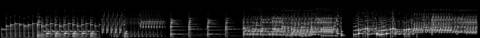
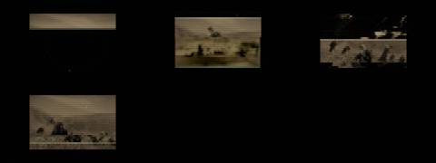
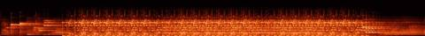

Afterlight / V Mosaic / AFL-19
V · Mosaic · AFL-19 of 22 · 1:08
Thus the Picture Is Reassembled
The note that produced it
On this track: Many nice moments and samples to find.
“I want each to be a mosaic assemblage of the tracks, never the whole track. Each a separate video experiment to see the samples, get the groove. Aim for 1–2 minutes per track.”
“A different attempt and technology for each Afterlight song / music video experiment”: readable as embers from their spectrograms, as Gaussian splats of places.
What was made
Thirty-line Nipkow-disk television: each hit of the beat scans one more line of an archive frame back into place.
Ten one-shots from 0:00.5 to 1:19.6 rebuilt into a 120 bpm beat
What came back
The note on this version, which produced AFL-20 Sun in Your Eyes:
The sample from 0:00 to 0:12, with the kick.
Images made while working: contact sheets, check frames, spectrograms, the stills compared before and after a fix. Tap one to see it full size.






No separate critic agent was run on this cut. The critique came from the director, in the notes on either side of it.
On the cut before
Many nice moments and samples to find.
On this cut
The sample from 0:00 to 0:12, with the kick.
Sample map
Every sound placed in the 1:08 study, 326 events by layer, coloured by the track it was cut from. The bars under the map are the whole source tracks; the lit spans are the parts actually used (approximate: stretched and frozen samples are counted by where they start).
The recipe
The function that composed this study, exactly as it ran.
def picture():
"""thus the picture is reassembled: one-shots cut from the whole track and rebuilt into a new beat"""
n = 'picture'; m = Mix(84); P = 2.0 # 120 bpm bar
hits = {}
for nm, a in [('low', 3.24), ('note1', 0.5), ('note2', 1.6), ('stab', 8.1), ('pluck', 22.6), ('bell', 29.1), ('blip', 33.8), ('chord', 38.5), ('arp', 55.0), ('end', 79.6)]:
a = snap(n, a, 0.2); hits[nm] = (a, cut(n, a, a + (0.9 if nm not in ('chord', 'end') else 2.2), 0.002, 0.08))
def hit(layer, nm, t, g=1.0): a, x = hits[nm]; m.put(layer, x, t, g, n, round(a, 2), nm)
# the picture arrives a piece at a time
for i, nm in enumerate(['note1', 'note2', 'bell', 'pluck', 'blip', 'chord']):
hit('pieces', nm, 1 + i * 1.5, 0.8); m.put('ember', ember(hits[nm][1], 6, 0.4), 1 + i * 1.5, 1, n, hits[nm][0], 'tail')
t = 10.0; st = P / 8
beat = {'low': [0, 3, 8, 11], 'stab': [4, 12], 'blip': [2, 6, 10, 14], 'pluck': [7, 15], 'bell': [5]}
for bar in range(24):
for nm, pos in beat.items():
for p in pos:
if bar % 8 == 7 and nm != 'low': continue
hit('beat', nm, t + bar * P + p * st, 0.9 if nm == 'low' else 0.6)
if bar % 4 == 0: hit('chords', 'chord', t + bar * P, 0.5)
if bar % 2 == 1: hit('arp', 'arp', t + bar * P + 4 * st, 0.5)
if bar >= 16: hit('arp', 'note2', t + bar * P + 6 * st, 0.4)
m.kick_at([t + b * P + p * st for b in range(24) for p in beat['low']])
# a long stretch of the track's quiet passage under the second half
m.put('bed', freeze(cut(n, 58, 64), 26), t + 8 * P, 0.35, n, 58, 'freeze')
t += 24 * P
m.put('end', echo(hits['end'][1], P / 4, 0.6, 10), t, 0.9, n, hits['end'][0], 'echo')
m.put('ember', ember(hits['chord'][1], 16, 0.8), t, 1, n, hits['chord'][0], 'tail')
m.duck(['chords', 'bed', 'arp'], 0.5, release=0.2)
return mThe picture technique
class Nipkow:
"""thus the picture is reassembled: a thirty-line Nipkow disk scans archive frames back into being, one line per beat-hit,
the spinning disk behind it and every finished line holding its phosphor"""
def __init__(s, ctx, cats=('stu', 'mir', 'han', 'chi'), seed=7):
s.c = ctx; s.ids = footage(cats, 8, seed); s.clips = [clip_frames(i, 160, 120, 12, 6) for i in s.ids]
s.canvas = np.zeros((30, 120, 3), np.float32); s.line = 0.0; s.pic = 0
s.hits = sorted([e['t'] for e in ctx.events if e['layer'] in ('beat', 'pieces', 'c')]); s.hi = 0
s.emb = Embers(15000, 9)
def frame(s, t, dt):
c = s.c; n = 0
while s.hi < len(s.hits) and s.hits[s.hi] <= t: s.hi += 1; n += 1
s.line += n * 0.9 + dt * 2.0
cl = s.clips[s.pic % len(s.clips)]; tgt = cv2.resize(cl[int(t * 12) % len(cl)].astype(np.float32), (120, 30), interpolation=cv2.INTER_AREA)
while s.line >= 1:
li = int(s.canvas.shape[0] * 0 + (s.pic_line if hasattr(s, 'pic_line') else 0))
s.pic_line = (getattr(s, 'pic_line', 0) + 1); idx = (s.pic_line - 1) % 30
s.canvas[idx] = tgt[idx]
if idx == 29: s.pic += 1
row_y = 120 + idx * 16
xs = np.linspace(260, 1020, 60); s.emb.emit(xs, np.full(60, row_y, np.float32), vx=30, vy=-40, T=0.7, life=1.5, spread=10)
s.line -= 1
s.canvas *= 0.995
scan = (getattr(s, 'pic_line', 0)) % 30
big = cv2.resize(s.canvas, (760, 480), interpolation=cv2.INTER_NEAREST)
lines = (np.sin(np.arange(480) / 16 * math.pi) ** 2)[:, None, None] * 0.75 + 0.25
big = big * lines
img = np.zeros((H, W, 3), np.float32)
# the disk: a large dark wheel turning behind, its spiral of holes lit where the scan is
ang = t * 2 * math.pi * 1.0; dc = (W / 2, H / 2)
for h_ in range(30):
a = ang + h_ * 2 * math.pi / 30; rr = 300 - h_ * 4.5
x, y = dc[0] + math.cos(a) * rr, dc[1] + math.sin(a) * rr
on = 1.0 if h_ == scan else 0.12
cv2.circle(img, (int(x), int(y)), 3, tuple(float(v) * on for v in (1.0, 0.7, 0.4)), -1, cv2.LINE_AA)
img[120:600, 260:1020] += big * np.array([1.0, 0.82, 0.58]) * (0.9 + 0.4 * c.kick(t, 0.2))
sy = 120 + scan * 16 + 8; img[max(0, sy - 2):sy + 2, 260:1020] += np.array([1.0, 0.85, 0.6]) * 0.9
s.emb.step(t, dt, wind=(35, -25)); img += s.emb.draw(t, 0.6)
return img + gaussian_filter(img, (4, 4, 0)) * 0.5Files
The scripts that made this version, as plain text.
- compose.py254 linesthe nine mosaics: every cut, loop and freeze
- sampler.py154 linesloop, stretch, reverb, echo, freeze, tape stop
- mix.py85 linesthe 178-second set
- sound_design.py91 linesneedle drop, inhales, risers, sub, tape bus
- engines.py367 linesthe ten picture techniques
- vis_common.py106 linesshared embers, archive frames, the finish
- render.py41 linesrenders frames and encodes
- analyze.py21 linestempo and onsets of each source track
A film concept by Sosuke & Watson · CRASH LAB · PAELEO · CINEOSIS LAB